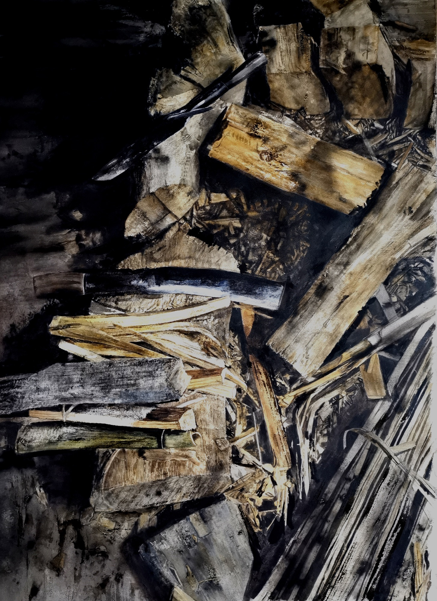

Firewood of Tarim
柴蕴塔里木

- Artwork ID / 作品编号
- KW-W-000029
- Year / 年份
- 2025
- Medium / 媒介
- Watercolor on paper / 纸本水彩
- Dimensions / 尺寸
- 112 × 79 cm (H × W / 高 × 宽)
About the work / 作品介绍
Firewood of Tarim depicts split logs, an axe, and scattered wood chips from everyday life in the Tarim region. Cuts, grain, wear, and patterns of stacking preserve the sequence of labor and allow time to enter the painting in material form. A compressed dark ground heightens the gray, gold, and earth tones of the wood. Through a modest domestic scene, the work observes how natural material becomes evidence of a sustained relation between people and land through repeated use.
《柴蕴塔里木》描绘塔里木地区日常生活中的木柴、柴刀和散落木屑。切口、纹理、磨损与堆叠方式保存了劳动的次序，也让时间以物质形态进入画面。深色背景压缩空间，木材表面的灰、金与土色因此更为突出。作品通过一个朴素的生活场景，观察自然材料如何在反复取用中成为人与土地关系的见证。